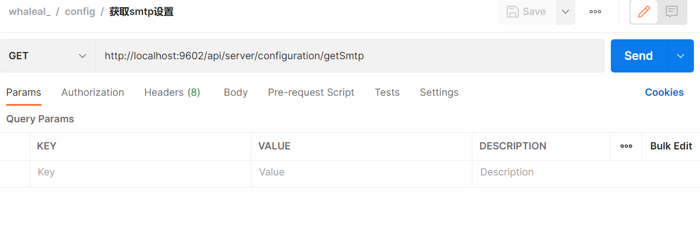
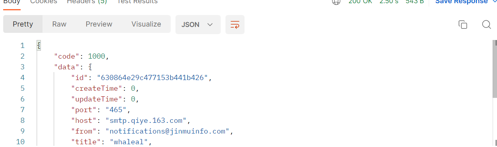
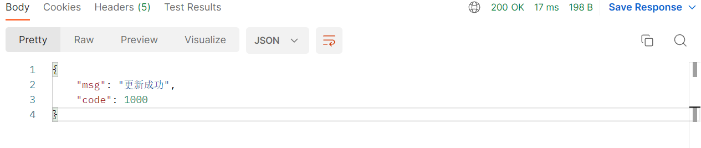
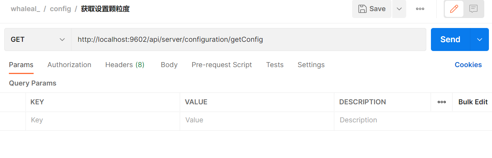
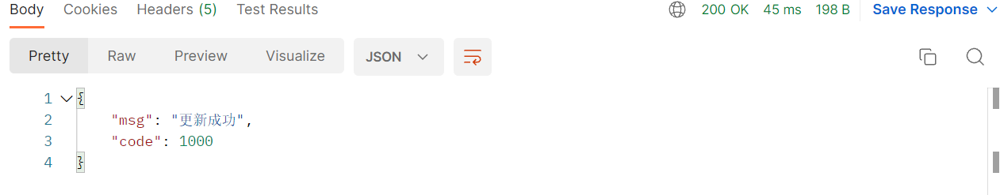

Configuration Interface
To make API calls, you need to set the whaleal-Token in the request header and provide the necessary parameters in the request. The response content will be in JSON format, and special entity classes will be provided in a table at the end. For parameters involving time, use timestamps.
Default Request Header Format, Special Cases Noted
The whaleal-Token is obtained from the login API call and should be included in the request header for subsequent API calls.
Retrieve whaleal-Token from Login API
| KEY | VALUE |
|---|---|
| Accept-Encoding | gzip,deflate,br |
| Connection | keep-alive |
| Content-Type | application/json |
| whaleal-token | "token" |
1. Get SMTP Settings
1.1 Request Path
GET: http://{Server-Host}:{Port}/api/server/configuration/getSmtp
1.2 Request

1.3 Response
| Description | Schema | |
|---|---|---|
| code | Status code: 1000 for success, other codes for errors | int |
| data | Returned data | SmtpEntity |

2. Update SMTP Settings
2.1 Request Path
POST: http://{Server-Host}:{Port}/api/server/configuration/updateSmtp
2.2 Request Parameters:
| Name | Located in | Description | Required | Schema |
|---|---|---|---|---|
| smtpEntity | Body | SMTP entity | Yes | SmtpEntity |
Example SMTP Entity:
{
"id": "630864e29c477153b441b426",
"createTime": 0,
"updateTime": 0,
"port": "465",
"host": "smtp.qiye.163.com",
"from": "notifications@jinmuinfo.com",
"title": "whaleal",
"userName": "notifications@jinmuinfo.com",
"password": "89k235Xwma9caArk",
"default_encoding": "utf-8",
"propertiesMailSmtpSSLEnable": true,
"propertiesMailSmtpSSLRequired": true,
"propertiesMailSmtpPort": null
}
2.3 Response
| Description | Schema | |
|---|---|---|
| code | Status code: 1000 for success, other codes for errors | int |
| msg | Returned message | String |

3. Get Granularity Settings
3.1 Request Path
GET: http://{Server-Host}:{Port}/api/server/configuration/getConfig
3.2 Request

3.3 Response
| Description | Schema | |
|---|---|---|
| code | Status code: 1000 for success, other codes for errors | int |
| data | Returned data | ConfigEntity |
Example ConfigEntity:
{
"code": 1000,
"data": {
"id": "whaleal",
"createTime": 0,
"updateTime": 0,
"hostAcquisitionFrequency": 2,
"mongoAcquisitionFrequency": 2,
"logSaveTime": 3600
}
}
4. Update Granularity Settings
4.1 Request Path
POST: http://{Server-Host}:{Port}/api/server/configuration/updateConfig
4.2 Request Parameters:
| Name | Located in | Description | Required | Schema |
|---|---|---|---|---|
| configEntity | Body | Configuration entity | Yes | ConfigEntity |
Example Configuration Entity:
{
"hostAcquisitionFrequency": 2,
"mongoAcquisitionFrequency": 2,
"logSaveTime": 3600
}

4.3 Response
| Description | Schema | |
|---|---|---|
| code | Status code: 1000 for success, other codes for errors | int |
| msg | Returned message | String |
